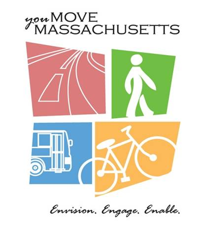

How we do bussiness

Conduct Rigorous, innovative ,and collaborative planning and technology transfer using the best data managment and analysis tools in order to move people and goods on a safe, efficient, and integrated transportation network, comply with federal and state regulations, and support vibrant communities.



/
#